Bürgerportal zur Eingabe von Ideen und Problemen
Inhalt
Allgemein
Ein Online-Portal zur Gestaltung des öffentlichen Raums.
Bürger können auf einer interaktiven Karte Probleme im Stadtbild oder Ideen zur Stadtentwicklung direkt an die Verwaltung melden.
Die Meldungen werden zur Bearbeitung automatisch den jeweils Zuständigen der kommunalen Verwaltung zugeordnet.
Im Verlauf des Prozesses können Bürger sich anhand der Karte über den Sachstand informieren.
Anwendungen
- Meldeoberfläche
- BearbeiterOberfläche
Meldeoberfläche
Aufnehmen von Meldungen
Fotos mitschicken
OSM Straßensuche
WMS Dienste
↓
Unterschiedlicher Status
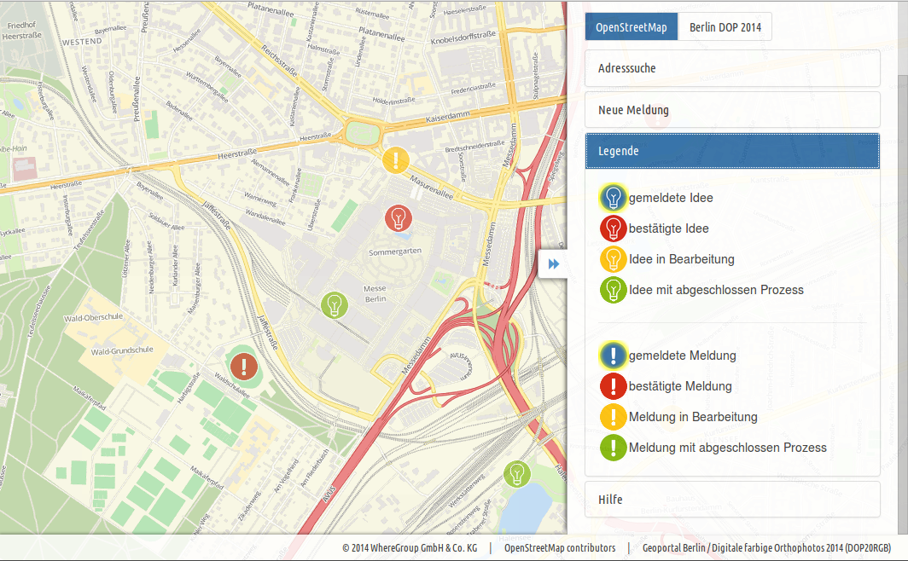
Infos zu den Meldungen...
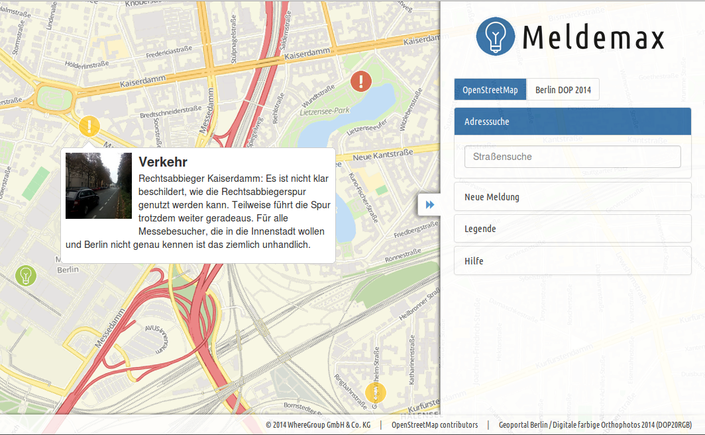
...abhängig vom Status
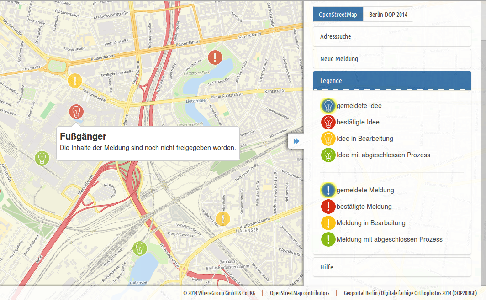
OSM Straßensuche
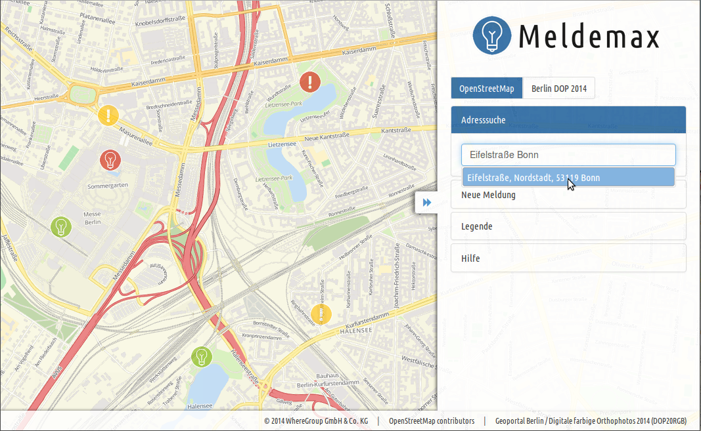
Idee Melden
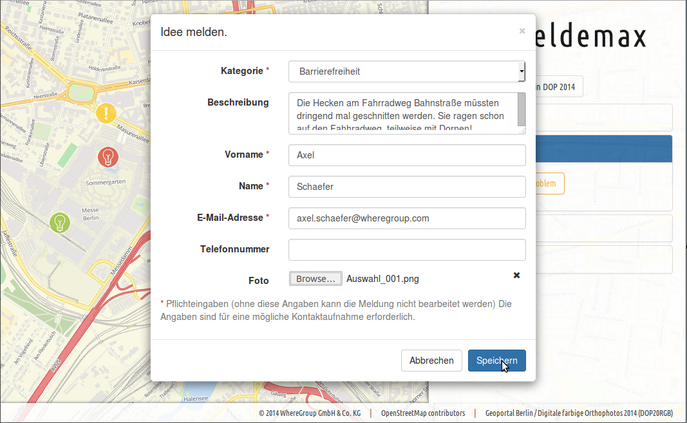
Andere Hintergrundkarte
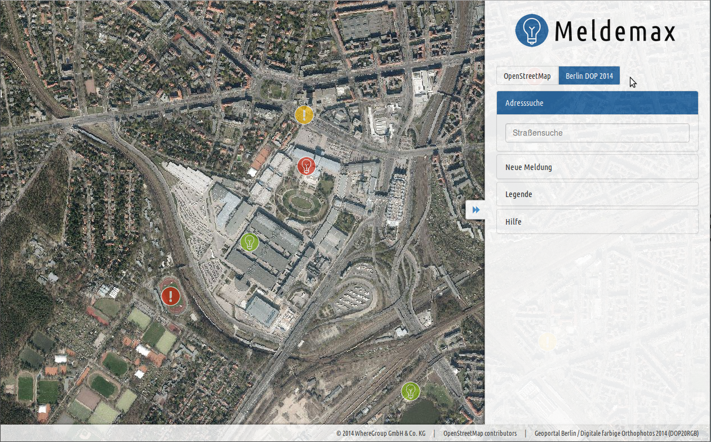
(c) Karte: Geoportal Berlin / Digitale farbige Orthophotos 2014 (DOP20RGB)
Bearbeiter
Liste der Meldungen
Abhängig vom Bearbeiter
Workflowbasiert
↓
Bearbeitersicht
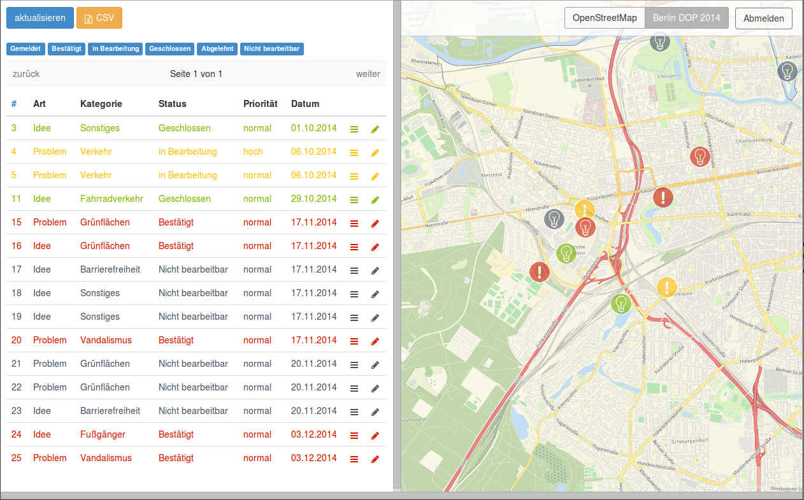Filter
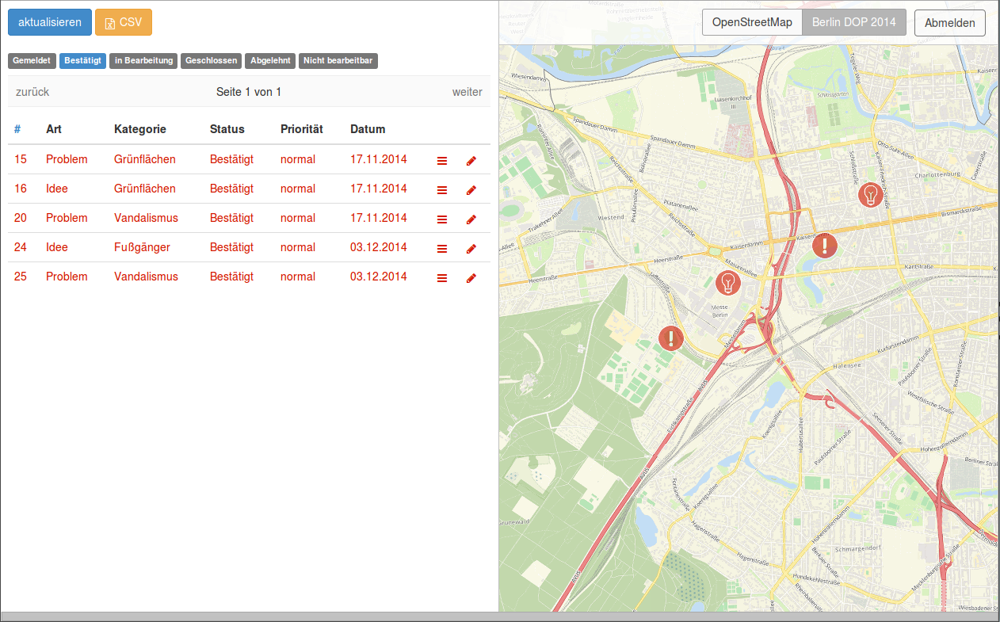Interaktion Tabelle und Karte
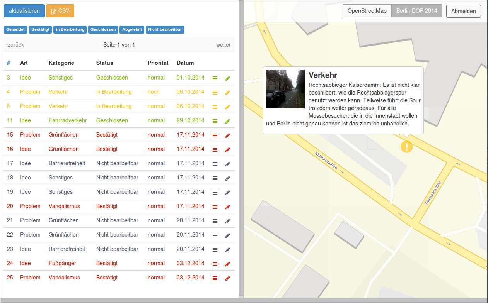Bearbeiten einer Meldung
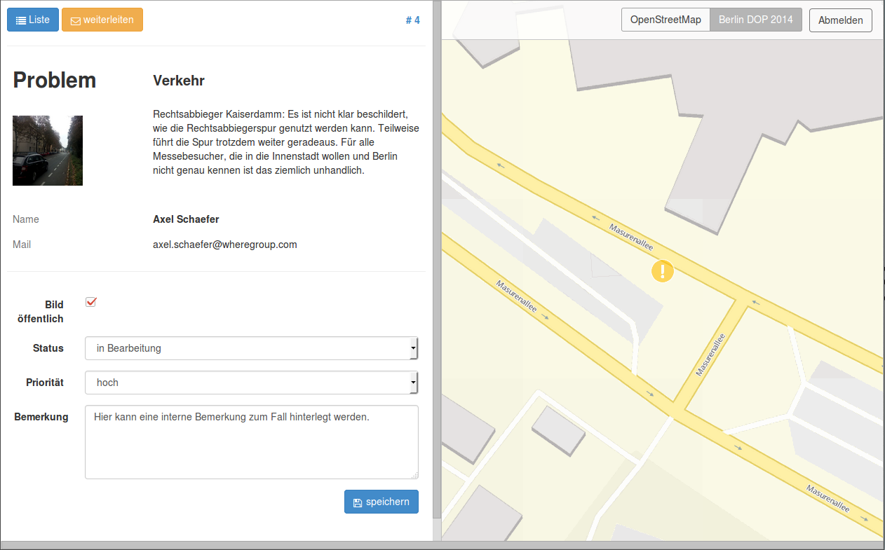Weiterleiten an Externe
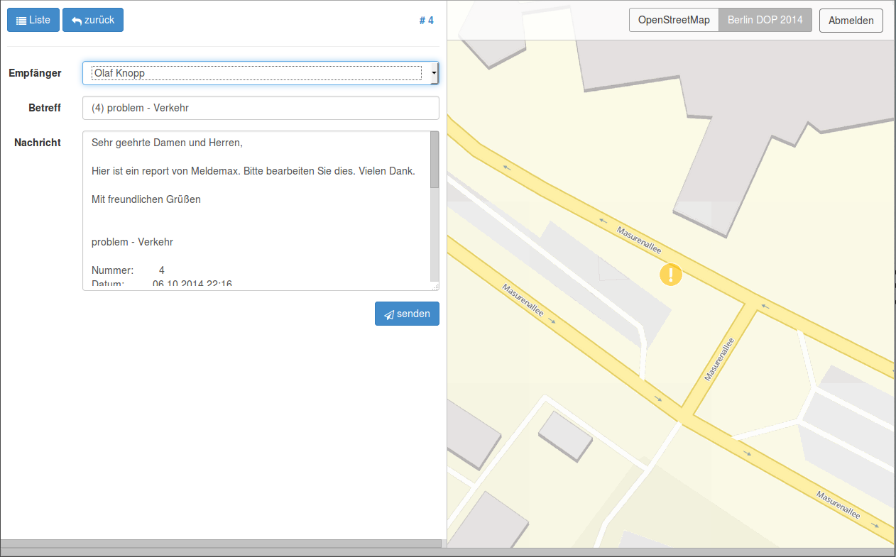Historie
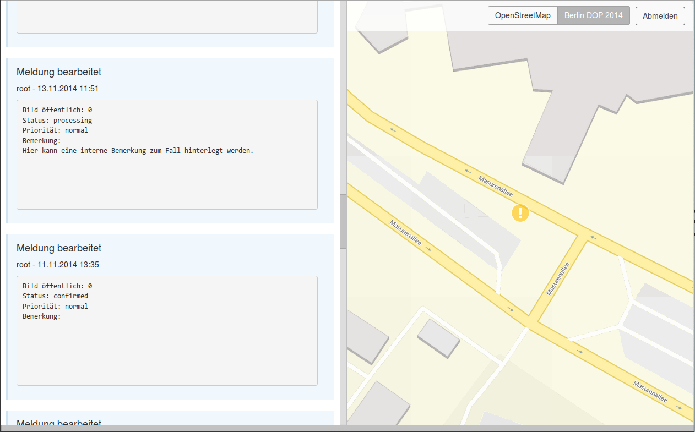Export
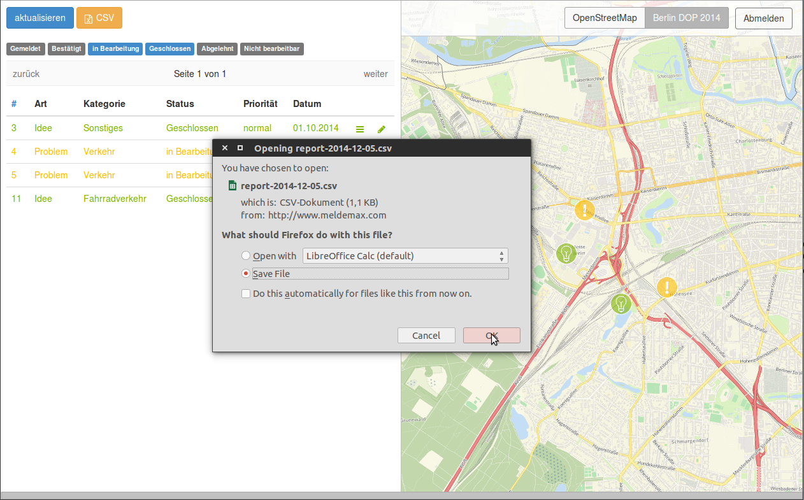Hosting
Es soll hauptsächlich auf einem eigenen Server gehostet werden.
Die Kunden haben alle das gleiche Produkt, mit Möglichkeiten, es an eigene Bedürfnisse anzupassen.
Es soll auch für bestehende Mapbender Kunden einzurichten sein.
Versionen
Version 1 geplant für Ende September.
Version „2“ geplant für Ende 2014.
Zielgruppe
- Die Anwendung für Verwaltungen
- Unterstützung bei der Aufnahme von Problemen und Ideen.
- Kontrolle über die Veröffentlichung und Anzeige.
- Beachtung der Schritte zur Abarbeitung.
- Möglichkeiten zur weiteren räumlichen und statistischen Analyse.
Zusammenfassung
...
Vielen Dank für Ihre Aufmerksamkeit |
|
Fragen? |
|
| WhereGroup GmbH & Co. KG Eifelstraße 7 | 53121 Bonn |
|
| Tel.: +49 (0)228 909038-0 Fax: +49 (0)228 909038-11 |
|
| info@wheregroup.com http://www.wheregroup.com |
|